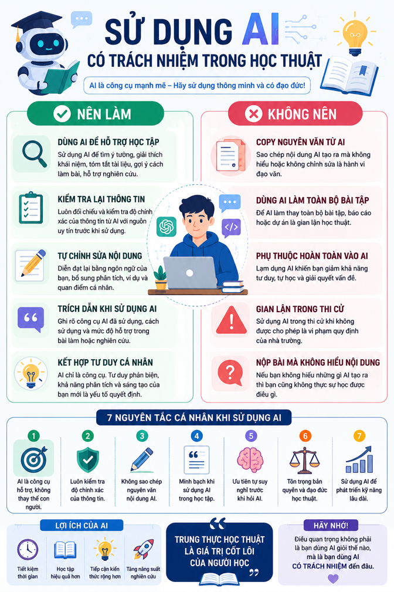

Bài 6: An toàn và liêm chính học thuật trong môi trường số
BÁO CÁO
SỬ DỤNG AI CÓ TRÁCH NHIỆM TRONG HỌC TẬP VÀ NGHIÊN CỨU
Họ và tên: Bùi Công Nhật Quang - MSSV: 25024159<br>
I. MỞ ĐẦU
Hiện nay, trí tuệ nhân tạo (AI) đang phát triển rất mạnh và được ứng dụng rộng rãi trong giáo dục. Các công cụ như OpenAI ChatGPT, Gemini hay GitHub Copilot có thể hỗ trợ sinh viên tìm kiếm thông tin, giải thích kiến thức, tóm tắt tài liệu và hỗ trợ lập trình hiệu quả hơn.
Đối với sinh viên ngành công nghệ, AI giúp tiết kiệm thời gian và hỗ trợ học tập khá tốt. Tuy nhiên, nếu lạm dụng AI thì sinh viên dễ bị phụ thuộc công nghệ, giảm khả năng tư duy và có thể dẫn đến gian lận học thuật.
Trong bài báo cáo này, em sẽ:
Tìm hiểu chính sách sử dụng AI trong học thuật,
Thực hiện một nhiệm vụ học tập với AI,
Phân tích các vấn đề đạo đức,
Xây dựng bộ nguyên tắc cá nhân khi sử dụng AI có trách nhiệm.
II. CHÍNH SÁCH SỬ DỤNG AI TRONG HỌC THUẬT
Hiện nay nhiều trường đại học đã bắt đầu đưa ra hướng dẫn về việc sử dụng AI trong học tập và nghiên cứu. Em tham khảo định hướng chung của Đại học Quốc gia Hà Nội và một số trường quốc tế.
Các chính sách nhìn chung có những nội dung chính sau:
1. AI được phép sử dụng như công cụ hỗ trợ
Sinh viên có thể sử dụng AI để:
Tìm ý tưởng,
Tóm tắt tài liệu,
Giải thích kiến thức,
Hỗ trợ viết code và sửa lỗi.
Điều này cho thấy AI được xem như công cụ hỗ trợ học tập chứ không bị cấm hoàn toàn.
2. Không được sử dụng AI để gian lận
Một số hành vi bị xem là vi phạm:
Nộp nguyên văn nội dung do AI tạo ra,
Dùng AI làm toàn bộ bài tập,
Không hiểu nội dung nhưng vẫn nộp bài.
Theo em, đây là quy định cần thiết vì mục tiêu của học tập là phát triển tư duy và kỹ năng cá nhân.
3. Cần minh bạch khi sử dụng AI
Nhiều trường yêu cầu sinh viên:
Ghi rõ công cụ AI đã sử dụng,
Mô tả cách sử dụng,
Trích dẫn nếu AI hỗ trợ tạo nội dung.
Điều này giúp đảm bảo tính trung thực học thuật.
4. Nhận xét cá nhân
Theo em, chính sách trên khá hợp lý vì:
Khuyến khích sinh viên tiếp cận công nghệ mới,
Nhưng vẫn đảm bảo tính trung thực trong học tập.
AI rất hữu ích đối với sinh viên công nghệ, đặc biệt trong:
Học lập trình,
Debug code,
Tóm tắt tài liệu kỹ thuật,
Hỗ trợ tự học.
Tuy nhiên, nếu phụ thuộc quá nhiều vào AI thì sinh viên sẽ dễ mất khả năng tự tư duy và giải quyết vấn đề.
III. THỰC HIỆN NHIỆM VỤ HỌC TẬP VỚI AI
1. Nhiệm vụ được chọn
Em chọn nhiệm vụ:
“Chuẩn bị nội dung cho bài thuyết trình về ứng dụng AI trong giáo dục đại học”.
2. Các prompt đã sử dụng
Prompt 1
Hãy tạo dàn ý cho bài thuyết trình về ứng dụng AI trong giáo dục đại học dành cho sinh viên công nghệ.
Đầu ra AI
AI gợi ý:
Giới thiệu AI
Ứng dụng AI trong giáo dục
Lợi ích
Hạn chế
Kết luận
Đánh giá
Dàn ý khá đầy đủ nhưng còn chung chung nên em bổ sung thêm:
Ví dụ thực tế,
Phần đạo đức khi sử dụng AI.
Prompt 2
Hãy liệt kê các ứng dụng thực tế của AI trong học tập của sinh viên CNTT.
Đầu ra AI
AI đưa ra:
Hỗ trợ viết code,
Debug chương trình,
Tóm tắt tài liệu,
Giải thích thuật toán.
Đánh giá
Các ý khá sát thực tế nhưng còn ngắn nên em bổ sung thêm ví dụ từ trải nghiệm cá nhân.
Prompt 3
Hãy viết đoạn kết ngắn cho bài thuyết trình về AI trong giáo dục.
Đầu ra AI
“AI là công cụ hỗ trợ mạnh mẽ nhưng con người vẫn đóng vai trò quan trọng nhất trong tư duy và sáng tạo.”
Đánh giá
Em chỉnh sửa lại theo văn phong tự nhiên hơn để phù hợp với bài thuyết trình.
3. Cách em chỉnh sửa và sử dụng đầu ra AI
Sau khi nhận nội dung từ AI, em:
Kiểm tra lại thông tin,
Đối chiếu với tài liệu học tập,
Viết lại theo cách diễn đạt của bản thân,
Bổ sung nhận xét cá nhân.
AI chỉ đóng vai trò hỗ trợ ý tưởng và diễn đạt, không làm thay toàn bộ bài tập.
4. Trích dẫn việc sử dụng AI
Trong bài làm, em ghi chú:
“Bài làm có sử dụng ChatGPT để hỗ trợ lên ý tưởng và chỉnh sửa nội dung. Nội dung đã được kiểm tra và chỉnh sửa lại bởi tác giả.”
Theo em, việc trích dẫn AI là cần thiết để đảm bảo tính minh bạch và trung thực học thuật.
IV. PHÂN TÍCH CÁC VẤN ĐỀ ĐẠO ĐỨC
1. Ranh giới giữa hỗ trợ hợp lý và gian lận học thuật
AI có thể hỗ trợ rất tốt trong học tập nếu được sử dụng đúng cách. Ví dụ:
Giải thích kiến thức khó,
Gợi ý dàn ý,
Hỗ trợ sửa lỗi code.
Tuy nhiên, việc:
Copy nguyên văn nội dung AI,
Dùng AI làm toàn bộ bài tập,
Không hiểu bài nhưng vẫn nộp, có thể bị xem là gian lận học thuật.
Theo em, ranh giới nằm ở việc sinh viên có thực sự tham gia vào quá trình học tập hay không.
2. Quyền sở hữu trí tuệ và trích dẫn
AI được huấn luyện từ lượng dữ liệu lớn trên Internet nên đôi khi có thể tạo ra nội dung gần giống tài liệu gốc.
Điều này dẫn đến:
Nguy cơ đạo văn,
Không rõ nguồn gốc thông tin,
Khó xác định quyền sở hữu nội dung.
Vì vậy sinh viên cần:
Kiểm tra nguồn,
Không sao chép nguyên văn,
Trích dẫn rõ ràng khi sử dụng tài liệu tham khảo hoặc AI.
3. Tác động đến quá trình học tập
Tác động tích cực
AI giúp:
Tiết kiệm thời gian,
Hỗ trợ tự học,
Tiếp cận kiến thức nhanh hơn.
Đối với sinh viên công nghệ, AI còn hỗ trợ:
Debug code,
Giải thích thuật toán,
Học công nghệ mới.
Tác động tiêu cực
Nếu lạm dụng AI:
Sinh viên dễ phụ thuộc,
Giảm khả năng tư duy,
Giảm kỹ năng tự giải quyết vấn đề.
Ví dụ, nhiều người có thể viết được code nhờ AI nhưng lại không hiểu thuật toán hoạt động như thế nào.
V. BỘ NGUYÊN TẮC CÁ NHÂN KHI SỬ DỤNG AI
Sau khi tìm hiểu và trải nghiệm thực tế, em xây dựng bộ nguyên tắc cá nhân như sau:
Chỉ dùng AI để hỗ trợ, không dùng để làm thay hoàn toàn bài tập.
Luôn kiểm tra lại thông tin do AI cung cấp.
Không sao chép nguyên văn nội dung AI.
Minh bạch khi sử dụng AI trong học tập.
Ưu tiên tự suy nghĩ trước khi hỏi AI.
Tôn trọng bản quyền và đạo đức học thuật.
Sử dụng AI để phát triển kỹ năng lâu dài thay vì phụ thuộc hoàn toàn.
VI. INFOGRAPHIC

VII. KẾT LUẬN
Qua bài tập này, em nhận thấy AI là công cụ rất hữu ích đối với sinh viên, đặc biệt là sinh viên ngành công nghệ. AI giúp hỗ trợ học tập hiệu quả, tiết kiệm thời gian và tăng khả năng tiếp cận kiến thức.
Tuy nhiên, AI cũng đặt ra nhiều vấn đề về đạo đức học thuật như đạo văn, gian lận và sự phụ thuộc công nghệ. Vì vậy, sinh viên cần sử dụng AI một cách có trách nhiệm, minh bạch và đúng mục đích.
Theo em, AI nên được xem là công cụ hỗ trợ để phát triển tư duy và kỹ năng, chứ không phải công cụ làm thay hoàn toàn quá trình học tập.